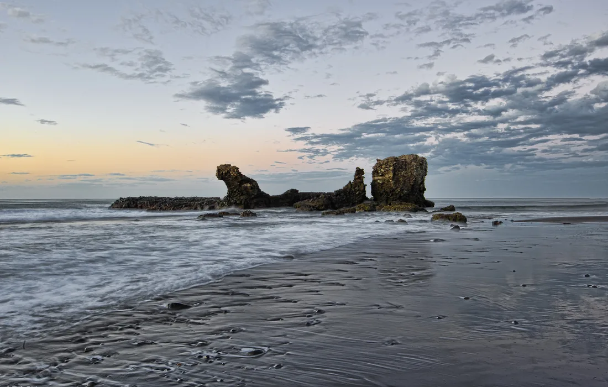
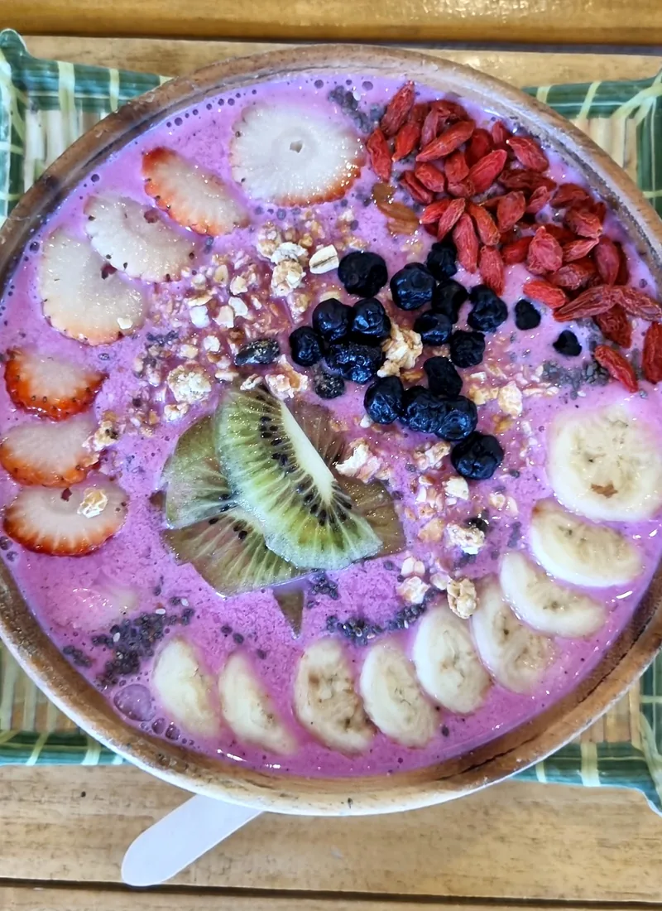
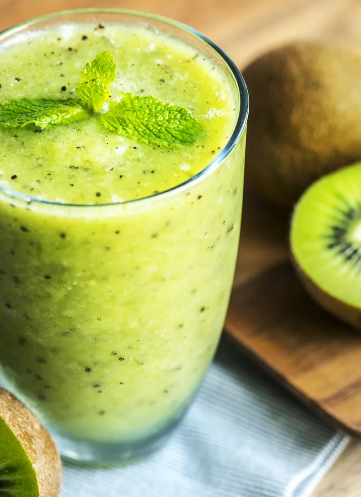
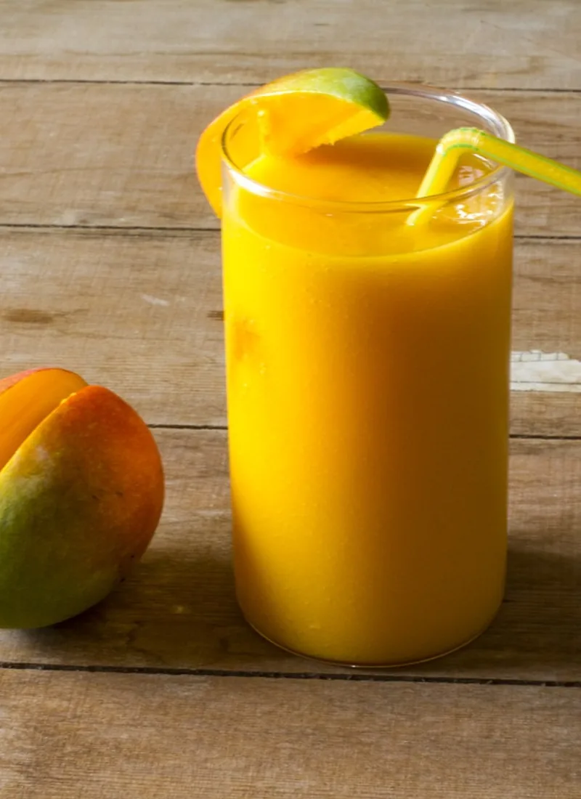
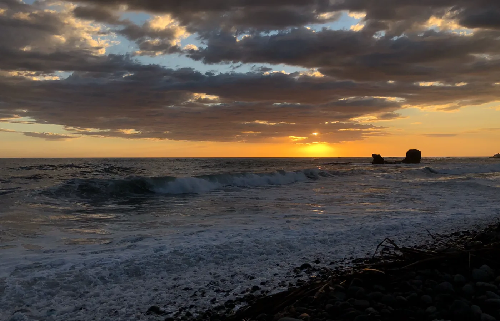

Soya
Smoothies, plant milks made here, bowls and good coffee, a short walk from the surf at El Tunco. Breakfast before the waves, dinner after them.

Pick a board
The menu, roughly in the order you’ll want it through a beach day.

Smoothies and bowls
Choco berry, peanut butter, and fruit bowls to eat with a spoon.
Plant milks
Soy, coconut and cashew milk, made here. Try one in your latte.

Juices
Fresh juices, cold, for after the water.
Coffee
Espresso and lattes, a good reason to sit down and get some work done.

Lunch and dinner
Salads, bowls, vegan ceviche, pizza and avocado toast.
Something sweet
Banana bread and desserts from the counter.
Know your diet? So do we.
Most of the menu is vegetarian, with plenty of vegan and gluten-free choices. A few dishes have chicken, and some items are made with honey. If you eat strictly vegan, tell us when you order and we’ll point you to the right things.
Stay a while
Wi-Fi, tables outside, and no one rushing you. Bring the laptop, or just the sunburn.

Every day, 8am to 9pm
Carretera a TamaniqueEl Tunco, La Libertad, El Salvador